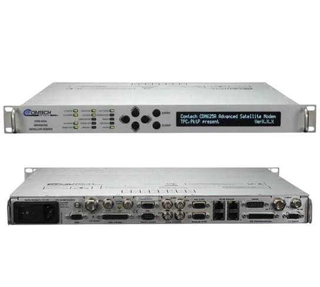

01
مرونة في الواجهات
يمكن دمجه مع معدات وشبكات الاتصالات المختلفة.

يُقدّم مودم الأقمار الصناعية المتطور Comtech CDM-625A أداءً متميزًا بفضل تقنية الترميز والتضمين التكيفي (ACM)، مما يتيح الاستخدام الفعّال للنطاق الترددي عبر الأقمار الصناعية في شبكات النقطة إلى النقطة (Point-to-Point) والنقطة إلى عدة نقاط (Point-to-Multipoint).
يمكن دمجه مع معدات وشبكات الاتصالات المختلفة.
لتحسين موثوقية الاتصال وتقليل تأثير أخطاء الإرسال.
يساعد على تقليل استهلاك سعة القمر الصناعي.
مناسب لتطبيقات الاتصالات التي تحتاج إلى نقل بيانات مستمر.